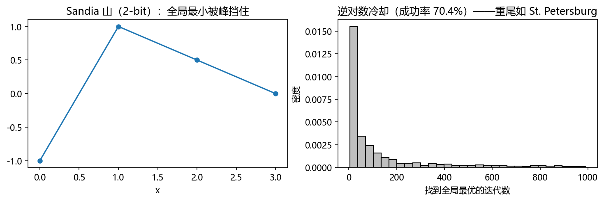

第 5 章 方差缩减#
本章解决：第 4 章报出的"± 误差"里，误差常数由单条 history 的方差决定。本章回答一个问题——在样本量不变的前提下，怎么把方差压下去。手段分几路：改变抽样分布（重要性抽样）、分区按比例抽样（系统/分层抽样）、制造相关性（相关抽样、对偶变量、控制变量）、改变 history 的生死与份数（俄罗斯轮盘与分裂）、改变记分方式（加权蒙特卡罗、拟随机数）。核心恒等式只有一个：估计量仍是同一个积分、期望不变，但二阶矩更小。 对照教材：Dunn & Shultis §5.1–5.12（本章主线）；Shonkwiler & Mendivil §6.3.1（方差缩减入门与控制变量/重要性抽样示例）。
| 关键词 | 事实 |
|---|---|
| 目标 | 同样 \(N\)，让 \(s(\bar z)\) 更小；等价于压小 \(\overline{z^2}-\bar z^2\) |
| 不被允许的事 | 改变期望值。所有技巧都必须保持无偏（或至少一致） |
| 重要性抽样 | 从 \(f^*\) 抽、乘权重 \(W=f/f^*\)；\(f^*\propto\lvert z\rvert f\) 时理论方差为零 |
| 系统/分层抽样 | 分区抽样，方差中"层均值差异"那一项被消掉 |
| 对偶变量 | 用 \(1-u\) 造负相关，\(g(u)\) 与 \(g(1-u)\) 取平均 |
| 控制变量 | 减去与已知期望量的偏差，最优系数由协方差定 |
| 轮盘赌/分裂 | 按"是否有希望"杀或复制，权重补偿保证无偏 |
| 加权蒙特卡罗 | 排序后梯形积分，一维可达 \(N^{-1}\)；高维失效 |
| 拟随机数 | 低差异序列，Sobol 约 \((\ln N)^k/N\) |
本章代码：nb/ch05.ipynb（8 个实验，每个都给出实测方差缩减比与理论值对照）。贯穿全章的一句话：方差缩减不是数学定理的艺术，是"用关于问题的知识换计算量"的艺术——这也是 D&S 反复强调它是一门"艺术"的原因。
5.0 本章导图#
5.1 出发点：方差是从哪来的#
蒙特卡罗估计量的全部不确定性都写在方差里：
要让 \(s(\bar z)\) 变小，只有三条路：增大 \(N\)（成本线性增长，误差只按 \(\sqrt N\) 降——最笨的一条）、把 \(\overline{z^2}-\bar z^2\) 压小（本章主旨）、或者接受一点偏差换取更低方差（§5.10）。
第二条路为什么可行？因为 \(\overline{z^2}-\bar z^2\) 衡量的是"各条 history 之间散不散"。若每条 history 都给出接近均值的结果，方差自然小；极端地，若每条都恰好给出 \(\langle z\rangle\)，方差为零。方差缩减的目标就是通过人为干预（偏置抽样、分区、造相关），让 history 的结果更整齐。
D&S §5 开篇列了一张技术地图，按干预方式分类：
| 思路 | 做法 | 对应小节 |
|---|---|---|
| 变换问题 | 利用对称性把问题改写成等价但更易算的形式 | §5.1 |
| 截断简化 | 简化对结果无影响的物理细节，把省下的时间换成 history 数 | §5.1 |
| 修改抽样 | 从偏置分布抽样 + 权重补偿 | §5.2–5.5 |
| 控制 history | 轮盘赌杀死无望者、分裂有希望者 | §5.8 |
| 修改记分 | 让更多 history 产生非零分数 | §5.11 |
| 半解析 | 部分阶段用解析结果取代抽样 | §5.6–5.7 |
拓展：为什么"变换问题"常常最有效
D&S 图 5.1 的例子：单向粒子束均匀入射屏蔽板左侧，要估右侧一小块面积 \(\Delta A\) 的透射率。若真的在整个左表面均匀取入射点，几乎没人能正好打到 \(\Delta A\) 上。但"能否到达右表面"与入射点在左表面的位置无关，于是可以把所有粒子都从同一点入射、把整个右表面当记分区——期望值不变，效率提高几个数量级。这种"重写问题"的收益通常高于任何数值技巧，代价是要真正理解问题结构。
5.2 重要性抽样#
5.2.1 权重的来源#
要估 \(\langle z\rangle=\int zf\,\mathrm dx\)，但 \(z\) 在 \(V\) 的大部分区域接近于零，值几乎全部来自一小块区域。均匀（或按 \(f\)）抽样会把绝大多数 history 浪费在无关区域上。
引入任意一个重要性密度 \(f^*(\mathbf x)\)（同样非负归一），把积分改写成对它求期望：
于是估计量变成
无偏性的来源就一句话：\(f^*\) 在分子分母里各出现一次，积分值不变。权重 \(W\) 是"偏置的汇率"——在 \(f^*\) 抽得多的区域，样本被折扣；抽得少的区域，样本被加权。
5.2.2 方差比较与最优的重要性函数#
两个估计量的方差是
其中关键的一项是
判据：若在 \(z\) 贡献大的区域里 \(W<1\)（即 \(f^*>f\)，抽样被加强），则 \(\langle z^{*2}\rangle<\langle z^2\rangle\)，方差减小。
取极限情形 \(f^*(\mathbf x)=f(\mathbf x)z(\mathbf x)/\langle z\rangle\)，则 \(W=\langle z\rangle/z\)，代入得
于是 \(\sigma^2(z^*)=0\)。理论上存在零方差的重要性函数，但它需要知道 \(\langle z\rangle\) 本身——这正是我们要估的量。所以实践中的做法是：构造一个形状接近 \(z f\) 的 \(f^*\)。
5.2.3 最优形状的严格版本（Schwartz 不等式）#
对求积形式 \(I=\int_V g\,\mathrm d\mathbf x\)，用 \(f^*\) 抽样后
要最小化它，只需最小化 \(\int g^2/f^*\)。由 Schwartz 不等式
右端第二因子为 1，故
等号在 \(f^*\propto|g|\) 时成立。代回方差表达式：
若 \(g\) 在 \(V\) 上不变号，最小方差为零。这解释了为什么"重要性抽样做得好"可以极端有效：被积函数越接近单峰、越容易用密度拟合，收益越大。
拓展：为什么 \(f^*\propto|g|\) 不能直接用
因为归一化常数 \(\int|g|\mathrm dx\) 就是要估的积分（或与之等价的量）。这就是方差缩减的"先有鸡还是先有蛋"：知道答案就能零方差，正因为不知道才要算。实践中的全部智慧在于用便宜的信息（粗略解析估计、先导模拟、物理直觉）造一个"足够像"的 \(f^*\)。
5.2.4 实验：e 的七次方积分（D&S 习题 1）#
真值 \((e^7-1)/7=156.519\)。朴素均匀抽样的方差很大（被积函数在右端翘起），取 \(f^*(x)\propto 3^{7x}\)（形状接近 \(e^{7x}\)）后：
| 方法 | 估计值 | 标准误差 | 与真值偏差 |
|---|---|---|---|
| 朴素抽样 | 155.3677 | 0.5516 | −1.15 |
| 重要性抽样 | 156.5242 | 0.0337 | +0.005 |
标准差比 16.4 倍（方差比约 270）。图 5.1 左图是两种方法"单条 history 分数"的分布：重要性抽样的分数集中得多；右图是标准误差随 \(N\) 的下降，两条线斜率都近似 \(-1/2\)，但重要性抽样的整条线低了一个多量级。

零方差的验证（实验 2）：取 \(g(x)=3x^2\)（积分 1），则 \(f^*(x)=3x^2\)，权重 \(g/f^*\equiv1\)。实际抽样得到每条 history 的分数恒为 1、标准差 \(0\)——把 §5.2.3 的结论跑成了字面事实。
5.2.5 不连续的重要性函数：大间距的蒲丰投针（D&S 例 5.2）#
当针间距 \(D\gg L\) 时，\(z(x)\) 只在 \(x\in[0,L]\cup[D-L,D]\) 上非零，其余处为零。按 \(f=1/D\) 抽样，绝大多数样本落在零区。改用
\(D/L=10^4\) 时 \(P_{cut}=2/(10^4\pi)=6.3662\times10^{-5}\)，重要性抽样把相对误差压低了约两个数量级（D&S 图 5.4）。这类"只在子区间上抽样"的做法还有个通用版本：把"重要子区间" \([c,d]\) 的概率密度乘 \(\alpha\)、其余乘 \(\beta\)，由归一化条件解出
权重在子区间内为 \(1/\alpha\)、外为 \(1/\beta\)（D&S 例 5.3）。
5.3 系统抽样#
5.3.1 分区与估计量#
把积分区域切成 \(M\) 个互不重叠的子区域 \(V_1,\dots,V_M\)，令
则 \(f_m\) 是 \(V_m\) 上的 PDF，且
系统抽样的做法：按比例分配样本数 \(N_m=p_mN\)，每层按 \(f_m\) 抽，然后加权平均
无偏性直接由各层无偏推出。
5.3.2 方差分解：系统抽样为什么更好#
系统抽样的方差。各层样本相互独立、层内方差 \(\sigma_m^2\)，于是
朴素抽样的方差（关键一步）。把整体方差按层拆开，用到 \(f=p_mf_m\)：
展开平方后三项：第一项是 \(\sigma_m^2\)；第二项是 \(\int(z-\langle z\rangle_m)f_m\,\mathrm dx=0\)（层内偏差均值为零）；第三项被积函数是常数，积出来是 \((\langle z\rangle_m-\langle z\rangle)^2\)。于是
两式相减：
结论：系统抽样消掉的正是"各层均值差异"这一项。层与层之间差别越大（比如被积函数在某个区域整体抬高），收益越大；若各层均值相同，则没有收益。
实验（\(g(x)=\sin\pi x\)，\(M=16\) 层，60–200 次重复）：理论标准误差比为 7.68，实测 7.24——量级完全吻合。

拓展：系统抽样其实就是重要性抽样
令 \(f^*(\mathbf x)=f(\mathbf x)/p_m\)（\(\mathbf x\in V_m\)），则 \(W=f/f^*=p_m\)。也就是说，系统抽样是"分段常数权重"的重要性抽样——它不改变层内的相对重要性，只统一调整"每层被抽中的总概率"。这条观察把 §5.2 与 §5.3 合成一个框架（D&S §5.3.3）。
5.4 分层抽样#
5.4.1 与系统抽样的差别#
分层抽样（stratified sampling）也分区、也每层抽固定条数，但 \(N_m\) 不由 \(p_m\) 决定，而是选得让方差最小。方差公式同前：
5.4.2 最优分配的推导（Lagrange 乘子）#
在约束 \(\sum_m N_m=N\) 下最小化上式，用乘子 \(\lambda\) 构造
由此 \(N_j=p_j\sigma_j/\sqrt\lambda\)。再对 \(j\) 求和用掉约束：
含义：方差大的层多抽，方差小的层少抽；抽样数正比于 \(p_m\sigma_m\)。把这个 \(N_j\) 代回方差式，得到最小方差
5.4.3 为什么比朴素抽样好#
与 §5.3.2 的朴素方差相减：
第一项是 \(\sigma_m\) 的方差（非负），第二项是层均值差异（非负）。所以分层抽样几乎总是更好，且两项同时为正——除非各层的方差与均值全都相同。
实验（三层，\(\sigma=\{0.1,0.5,2.0\}\)，\(N=30000\)）：平均分配方差 \(4.733\times10^{-5}\)，最优分配 \(2.504\times10^{-5}\)，与理论 \((\sum p_m\sigma_m)^2/N\) 完全一致。
实践中的两个坑
其一：\(\sigma_m\) 未知。用同一批 history 既估计 \(\bar z\) 又估计 \(\sigma_m\)，两者相关，会得出奇怪结果（D&S 明确警告）。正确做法是先用小规模先导模拟粗估 \(\sigma_m\)。其二：高维时分区数爆炸——每维切 \(k\) 段就有 \(M=k^d\) 个子区，\(d\ge5\) 时既切不起也估不准方差。这是分层抽样最硬的限制。
5.4.4 重要性抽样 vs 分层抽样（D&S §5.4.2）#
| 重要性抽样 | 分层抽样 | |
|---|---|---|
| 用什么样的信息 | \(\lvert zf\rvert\) 的形状 | 各层的方差 |
| 点往哪集中 | 被积函数大的地方 | 方差大的地方 |
| 是否需要能抽样 | 是（\(f^*\) 要能抽） | 否（层内照原分布抽） |
| 主要风险 | \(f^*\) 拟合不好时方差反而增大 | 高维分区爆炸、方差未知 |
两者可以叠加：粗网格用分层，每格内再用重要性抽样（Press 等的自适应算法）。
5.5 相关抽样与对偶变量#
5.5.1 估计"两个几乎相同的量之差"#
许多问题要的不是某个量本身，而是微小差异：参数改一点点，结果变多少？若分别做两次独立模拟再相减，两次的误差各自独立叠加：
若让两次模拟共用同一串随机数，且两问题结构相似，则 \(\bar z_1,\bar z_2\) 高度正相关，协方差项把方差大幅拉低。这就是相关抽样。关键操作是"随机数同步"：在两问题对应位置使用同一个随机数。
D&S 例 5.4 的例子很典型：把平行线网格换成锯齿网格，\(P_{cut}\) 只增加 0.000334。独立模拟要用极多样本才能把这个小差值从噪声里分辨出来；共用针的落点后，两次结果的差稳定得多。
5.5.2 一个已知期望的"陪跑"：控制变量#
若存在一个近似问题，其期望 \(\langle z_o\rangle\) 已知，则可以构造
它的期望恒为 \(\langle z\rangle\)（因为 \(\langle\bar z_o-\langle z_o\rangle\rangle=0\)），对任意 \(\alpha\) 都无偏。方差是
对 \(\alpha\) 求导置零，得最优系数
此时
结论：方差最多能压到原来的 \(1-\rho^2\) 倍；相关性越强收益越大。这也解释了"控制变量法"为什么极受欢迎——它只需要一个便宜的近似模型。
实验（估 \(\int_0^1e^{-x^2}\mathrm dx\)，控制变量 \(1-x^2\)，期望 \(2/3\) 已知）：\(\alpha_{opt}=0.6693\)，普通标准误差 \(4.49\times10^{-4}\)，控制变量后 \(5.5\times10^{-5}\)；\(\rho=0.9924\)，理论方差比 \(1/(1-\rho^2)=66.2\)，实测 66.2。
S&M §6.3.1 也给了同款例子：估正态密度在 \([-2,2]\) 上的积分（真值 0.9545），用对称的 Cauchy 密度作控制变量（其积分 \(G=\frac{2}{\pi}\arctan 2\approx0.70483\) 解析可算）。40 次试验：直接估计误差约 10%，控制变量后约 0.7%——量级相同。
5.5.3 对偶变量#
若两个无偏估计量 \(I_1,I_2\) 负相关，取其平均：
协方差为负时，平均值的方差可以远小于单个估计量。最常用的构造是反演对称：用同一组均匀随机数 \(u_i\)，同时产生 \(x_i=u_i\) 与 \(y_i=1-u_i\)。
对 \(I=\int_0^1g(x)\mathrm dx\)，令 \(I_{12}=\frac1{2N}\sum[g(u_i)+g(1-u_i)]\)。可以证明对任意 \(g\) 都有 \(\sigma^2(I_{12})\le\sigma^2(I_1)\)；若 \(g\) 连续单调且导数连续，则更强地有 \(\sigma^2(I_{12})\le\sigma^2(I_1)/2\)——这才是"多花一倍计算量也值得"的条件。D&S 的证明用了一个辅助函数
对单调递减的 \(g\) 论证 \(h\le0\)，再由分部积分得到 \(\int g(1-x)g(x)\mathrm dx-I^2\le0\)，即 \(2\sigma^2(I_{12})-\sigma^2(I_1)\le0\)。
一般分布下的版本：取 \(x_i=F^{-1}(\rho_i)\)、\(y_i=F^{-1}(1-\rho_i)\)，两者负相关。
实验（\(g(x)=e^{x}\)，真值 \(e-1=1.718282\)）：普通 \(1.718231\pm0.001557\)，对偶 \(1.718396\pm0.000198\)；\(\rho=-0.968\)，方差比 61.8，与理论 \(2/(1+\rho)=61.8\) 完全一致。

5.5.4 三者的区别#
- 控制变量：需要一个已知期望的陪跑量，靠它"吸收"共同波动；最优系数由协方差确定，收益 \(1-\rho^2\)。
- 对偶变量：不需要知道任何期望，靠同一随机数的反演制造负相关；收益 \(\frac{1+\rho}{2}\)（相对于单估计量）。
- 相关抽样：目标是差异而非单个量，靠随机数同步让两结果同涨同落。
5.6 部分解析：区域分割与降维#
5.6.1 区域分割（partition）#
若 \(V=V_1\cup V_2\)，且 \(V_1\) 上的积分能解析算出 \(I_1\)，则把剩下的部分定义为截断密度
于是
把能解析的部分拿掉，方差只会更小（Rubinstein 的结论）：解析部分贡献的是零方差，剩下的抽样只覆盖更难的那一半。
5.6.2 降维（expected value / 条件期望法）#
把 \(\mathbf x=(\mathbf u,\mathbf v)\) 拆开，若对 \(\mathbf v\) 的积分能解析完成，则
抽样只发生在 \(\mathbf u\) 上，\(\mathbf v\) 那一维被"平均掉"了。这个估计量的方差总是不大于普通样本均值法（Rubinstein）。直观原因：对 \(\mathbf v\) 取条件期望相当于把该维的随机波动消掉——又一种"用解析换方差"。
拓展：这也是 Rao–Blackwell 化
统计里把估计量对充分统计量取条件期望会降低方差（Rao–Blackwell 定理）。条件期望法正是它的蒙特卡罗版本：能用积分算掉一个维度的随机性，就不要抽样去估它。
5.7 俄罗斯轮盘与分裂#
5.7.1 动机#
前几节都假设 \(p_m\) 已知或能估。但在复杂模拟（粒子输运、交通流、供应链）里，"哪块区域重要"往往是路径走到中途才知道的，而且一条 history 的成本可能极高。需要的是一套边走边决策的机制：
- 进入"没希望"的区域 → 以概率杀死，幸存者加权，避免浪费；
- 进入"有希望"的区域 → 分裂成多份，每份权重降低，提高命中率。
这就是 von Neumann 与 Ulam 提出的 Russian roulette and splitting。
5.7.2 权重账：为什么仍然无偏#
设一条 history 的入境权重为 \(W\)。
轮盘赌：以概率 \(p\) 杀死（记分为 0），以概率 \(1-p\) 存活，存活者权重改为
期望检验：\((1-p)\cdot\frac{W}{1-p}+p\cdot0=W\)，保持无偏，方差增大（这正是"杀掉低价值 history、把预算让给高价值 history"的代价）。
分裂：把权重 \(W\) 的 history 复制成 \(m\) 份，每份
总权重 \(m\cdot\frac{W}{m}=W\)，同样无偏，但命中记分区的概率提高了 \(m\) 倍。
若想按非整数比例 \(r_m\) 分裂，取 \(k_m=\lfloor r_m\rfloor\)、\(q_m=r_m-k_m\)：以概率 \(q_m\) 分成 \(k_m+1\) 份、以 \(1-q_m\) 分成 \(k_m\) 份，每份权重 \(W/r_m\)。
实验（稀有事：命中率 2%，40 万条 history）：
| 处理 | 估计值 ± 标准误差 | 说明 |
|---|---|---|
| 朴素 | 0.0198 ± 0.00022 | 真值 0.02 |
| 轮盘赌 \(q=0.9\) | 0.0186 ± 0.00068 | 无偏，但方差约 9 倍 |
| 分裂 \(m=4\) | 0.0198 ± 0.00022 | 记分守恒，等效样本量 ×4 |
轮盘赌本身不降低方差——它降低的是成本；只有把省下的时间换成更多 history，或与"重要性抽样/分裂"配合，才能在同样的机时下降低方差。这一点最容易被误解。
5.7.3 组合技术的合法性（D&S §5.9）#
实际计算常同时用多种技巧。历史上需要逐个证明"组合仍无偏"。Booth 与 Pederson 的结论给出了统一答复：只要每种技巧单独产生无偏记分，任意组合仍然无偏（"fair games 的组合还是 fair game"）。但 D&S 提醒：无偏不等于低方差，错误组合完全可能让方差爆掉。
5.8 改进的求积方案#
5.8.1 加权蒙特卡罗：把收敛阶提到 \(N^{-1}\)#
样本均值法的误差是 \(N^{-1/2}\)。但一维情况下有一个简单得多的高阶方案：把抽到的 \(N\) 个点排序，在相邻点之间用梯形公式：
由于 \(x_{(i)}\) 在区间上近似均匀铺开，相邻间距 \(\approx (b-a)/N\)，误差累积按 \(N^{-1}\) 下降（而不是 \(N^{-1/2}\)）。额外的好处：要加密时只需补算新点、重新排序，旧值不浪费——这是确定性网格做不到的（网格加密要全部重算）。代价是要排序，且难以推广到多维。
实验（\(g=e^{-x^2}\)，40 次重复的 RMS 误差）：样本均值法从 \(2.1\times10^{-2}\) 降到 \(1.2\times10^{-3}\)（\(N^{-1/2}\)），加权法从 \(2.1\times10^{-2}\) 降到 \(1.3\times10^{-4}\)（明显更陡，接近 \(N^{-1}\)）。

5.8.2 拟随机数（quasirandom / low-discrepancy）#
样本均值法之所以是 \(N^{-1/2}\)，根源是随机点会聚团、会留空洞。若改用"刻意填缝"的序列——Halton 用不同素基底的数码反演、Sobol 用格雷码构造——点列会均匀得多，误差可以逼近 \(N^{-1}\)。对 \(k\) 维光滑函数，Sobol 序列的误差约为 \((\ln N)^k/N\)：几乎就是 \(N^{-1}\)，但当 \(k\) 大时 \((\ln N)^k\) 会吞掉收益。
这叫拟蒙特卡罗（QMC），与"真随机"相反：它故意让点不独立。这也说明第 3 章那句"统计上像随机"并不是永远的优点——当目标是均匀覆盖而不是模拟随机性时，结构化序列更好。
5.8.3 有偏但一致的估计量（D&S §5.10）#
有时 \(f^*\) 太复杂抽不动，于是只在 \(V\) 上均匀抽样、用比值估计：
它有偏（比值的期望不等于期望的比值），但一致：分子分母各自收敛，比值收敛到 \(I\)。Powell 与 Swann 证明大 \(N\) 时它比样本均值法效率高 \(\sqrt N\) 倍。有偏估计量在蒙特卡罗里是被允许的——只要偏差随 \(N\) 消失，且你能说清它的量级。
5.9 怎样选#
落地时的经验顺序（D&S 与 S&M 的共同建议）：
- 先问能不能改写问题（对称性、降维、部分解析）。这一步的收益通常最大。
- 再看被积函数形状：若高度集中，先上重要性抽样；若区域差异明显，先上系统/分层抽样。
- 有已知近似模型就用控制变量；能做对偶就顺手做（几乎零成本）。
- 模拟类问题（history 成本高、路径依赖）用轮盘赌与分裂。
- 一维、光滑、要高阶精度：加权蒙特卡罗或 QMC；多维回到样本均值法 + 上述技巧。
- 永远报误差，并且用两种独立方法互验——方差缩减做错的典型症状是"结果看起来很好，但和另一个方法对不上"。
坑与陷阱#
重要性函数尾部太薄
若 \(f^*\) 在某个区域趋于零而 \(z f\) 不为零，权重 \(W=f/f^*\) 会爆炸，方差反而无穷大。重要性抽样最常见的翻车方式不是"效果一般"，而是"方差爆炸"。
把轮盘赌当成降方差手段
轮盘赌保持无偏但增大方差，它的价值是省机时。只有把省下的机时换成更多 history 或配合分裂，才谈得上降方差。
用同一批 history 既估均值又估分层方差
两者相关，会导致分层比例估偏、方差估计失真。先导模拟要单独跑。
高维还用分层抽样
每维切 \(k\) 段就是 \(k^d\) 个子区，5 维以上既算不动也估不准方差。
对偶变量用在非单调函数上
"负相关"不是自动成立的。对非单调的 \(g\)，\(g(u)\) 与 \(g(1-u)\) 可能几乎不相关甚至正相关；用前先算一下 \(\rho\)。
控制变量的系数随手取 1
\(\alpha=1\) 只在 \(z_o\) 与 \(z\) 尺度相当时合理；最优值由协方差决定，乱取可能让方差变大（式 5.60 中 \(\alpha^2\sigma^2(z_o)\) 项）。
以为组合越多越好
每种技巧都应单独验证有效，再组合；组合后必须重新检查无偏性与方差，不能假定"叠加即改进"。
速览#
- 方差缩减 = 在期望不变的前提下压小 \(\overline{z^2}-\bar z^2\)。
- 重要性抽样：从 \(f^*\) 抽、乘 \(W=f/f^*\)；\(f^*\propto|g|\) 时理论方差为零（但要先知道答案）。
- 系统抽样按 \(N_m=p_mN\) 分配，消掉"层均值差异"项；分层抽样按 \(N_m\propto p_m\sigma_m\) 分配，消掉更多。
- 分层最小方差 \(=(\sum p_m\sigma_m)^2/N\)。
- 控制变量：\(\alpha_{opt}=\operatorname{cov}(z,z_o)/\sigma^2(z_o)\)，方差降至 \(1-\rho^2\) 倍。
- 对偶变量：\(x=u,\ y=1-u\)，方差比 \(2/(1+\rho)\)；单调函数可证 \(\le1/2\)。
- 相关抽样：共用随机数，让两个近似问题的差稳定。
- 轮盘赌：存活者 \(W/(1-p)\)；分裂：\(m\) 份各 \(W/m\)——都保持无偏。
- 加权蒙特卡罗：排序 + 梯形，一维误差 \(N^{-1}\)，多维不适用。
- QMC：低差异序列，Sobol 约 \((\ln N)^k/N\)；与"随机"是两种不同的目标。
术语速查#
| 英文 | 中文 | 一句话 |
|---|---|---|
| variance reduction | 方差缩减 | 不增样本量而压小估计量方差 |
| importance sampling | 重要性抽样 | 从偏置密度抽样，用权重 \(f/f^*\) 修正 |
| importance function / weight | 重要性函数 / 权重 | \(f^*\) 与 \(W=f/f^*\) |
| systematic sampling | 系统抽样 | 分区、按 \(p_m\) 分配样本数 |
| stratified sampling | 分层抽样 | 分区、按 \(p_m\sigma_m\) 分配样本数 |
| optimal allocation | 最优分配 | \(N_m\propto p_m\sigma_m\) |
| correlated sampling | 相关抽样 | 共用随机数估计两个近似量之差 |
| control variate | 控制变量 | 用已知期望的陪跑量吸收波动 |
| antithetic variates | 对偶变量 | 用 \(1-u\) 造负相关再平均 |
| Russian roulette | 俄罗斯轮盘赌 | 按概率杀死 history，幸存者加权 |
| splitting | 分裂 | 把一条 history 复制成多份、权重均分 |
| fair game | 公平游戏 | 期望值不变的偏置模拟 |
| weighted Monte Carlo integration | 加权蒙特卡罗积分 | 排序后梯形积分，一维达 \(N^{-1}\) |
| quasirandom / low-discrepancy sequence | 拟随机 / 低差异序列 | 刻意填缝的点列，如 Halton、Sobol |
| quasi-Monte Carlo (QMC) | 拟蒙特卡罗 | 用低差异序列代替随机点 |
| biased but consistent estimator | 有偏但一致估计量 | 偏差随 \(N\) 消失（如比值估计） |
| expected value method | 期望值法（条件期望法） | 一维解析积分掉，降低有效维数 |
| partition of integration volume | 积分区域分割 | 能解析的部分先算掉 |